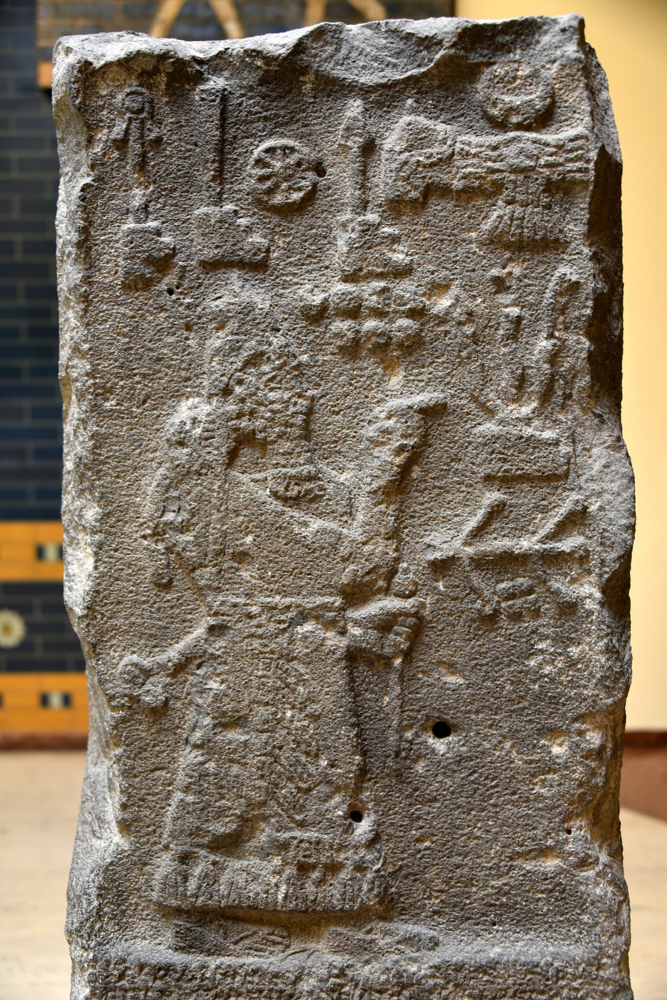

Saba'a Stele

- Find Name
- Saba'a Stele
- Description
- A basalt boundary-stone inscription of the Assyrian king Adad-nirari III (811-783 BC), found in 1905 in two pieces at Saba'a, south of the Sinjar Mountains in modern Syria. Erected by the king's officer Nergal-eresh, its 33 lines record Adad-nirari's genealogy, his year-5 campaign westward across the Euphrates, tribute received from Mari, king of Damascus (100 talents of gold and 1,000 of silver), and curses on anyone who defaces it. It is the primary source for Adad-nirari III's military campaigns.
- Historical Period
- Iron Age II
- Evidence Class
- Direct
- Interpretations
- The stele is the fullest contemporary record of the Assyrian pressure that relieved Israel from Aram in the early 8th century BC, fitting the setting of 2 Kings 13. One caution: the year-5 campaign target, long read as Palashtu (Philistia), has recently been re-read by some scholars as 'the land of Hatti' on linguistic grounds and comparison with the Tell al-Rimah stele; the Philistia reading should not be stated as settled.
- Alternative Names
- Saba'a Inscription
- Related Books
- Scripture Illuminated
- Biblical Significance
- It documents the Assyrian intervention in the Levant that matches the relief from Aramean oppression described in 2 Kings 13, and it preserves one of the earliest Assyrian uses of a name resembling 'Palestine'.
- Artifact Date
- c. 800 BC
- Current Location
- Istanbul Archaeology Museums (Ancient Orient Museum), Istanbul
- Date Discovered
- 1905
- Discovery Location
- Saba'a, Syria (south of the Sinjar Mountains)
- Timeline Era
- Divided Monarchy
Awaiting Review Not yet checked against scholarly sources. Treat its claims as provisional until this entry is reviewed. About verification
Last reviewed: not yet reviewed